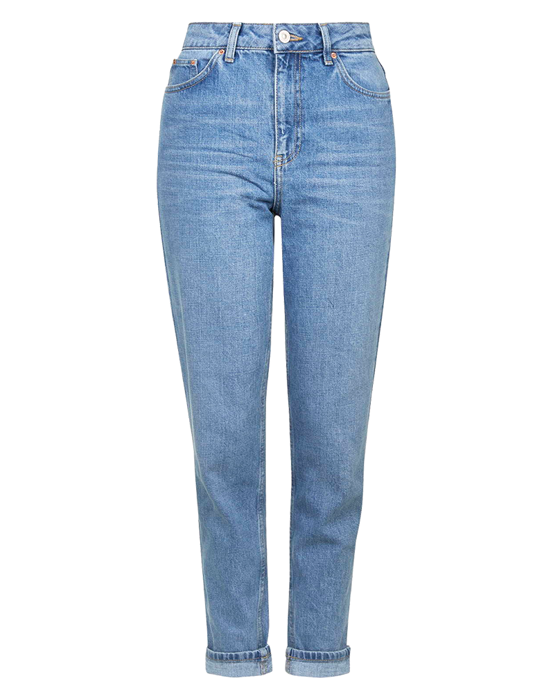
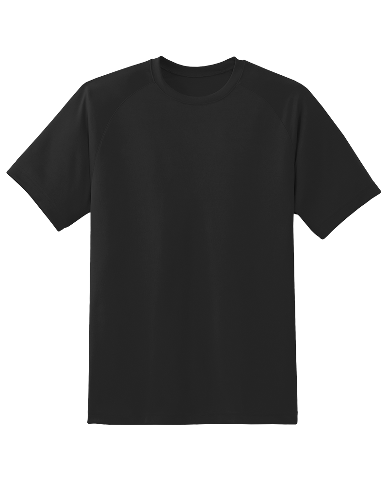
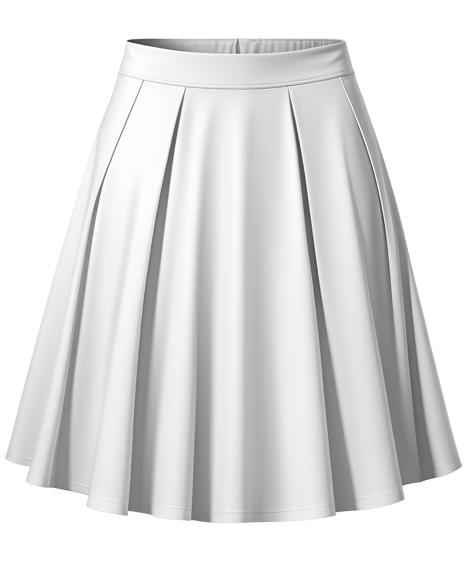
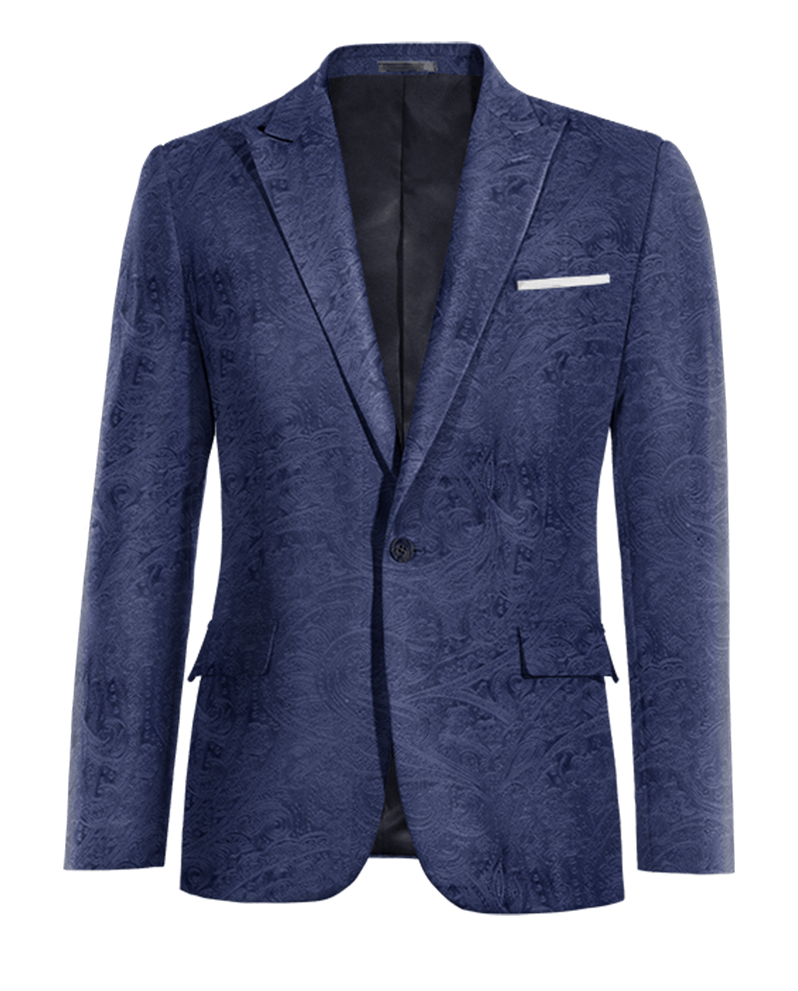
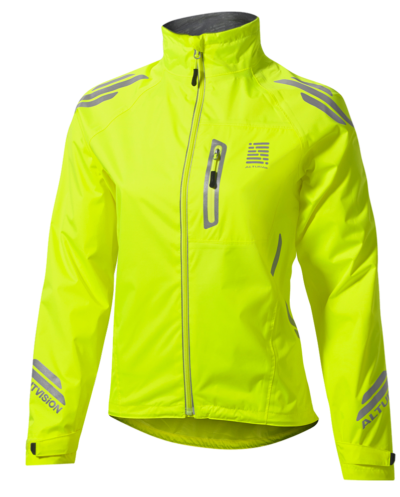
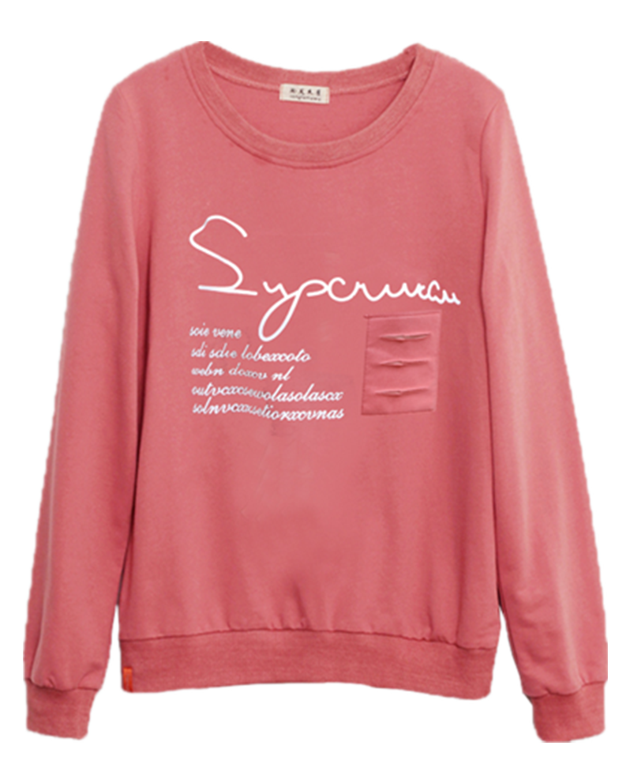
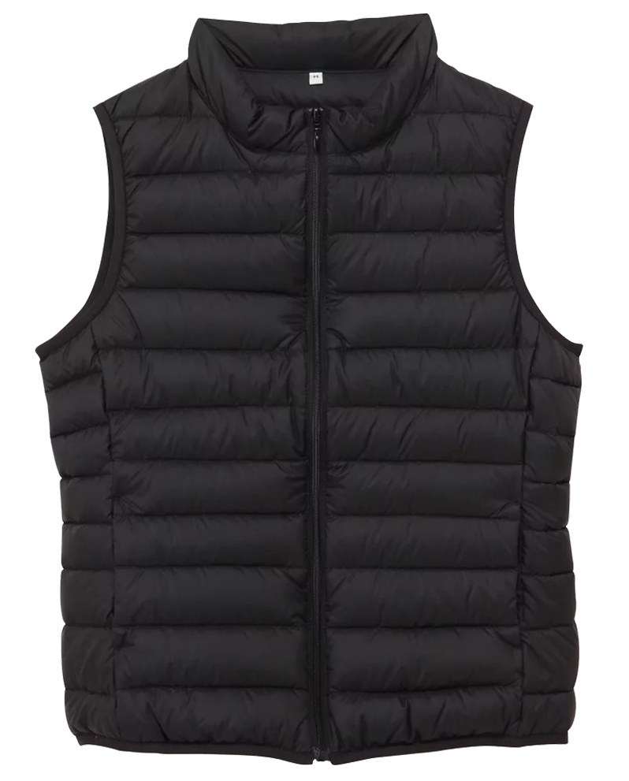
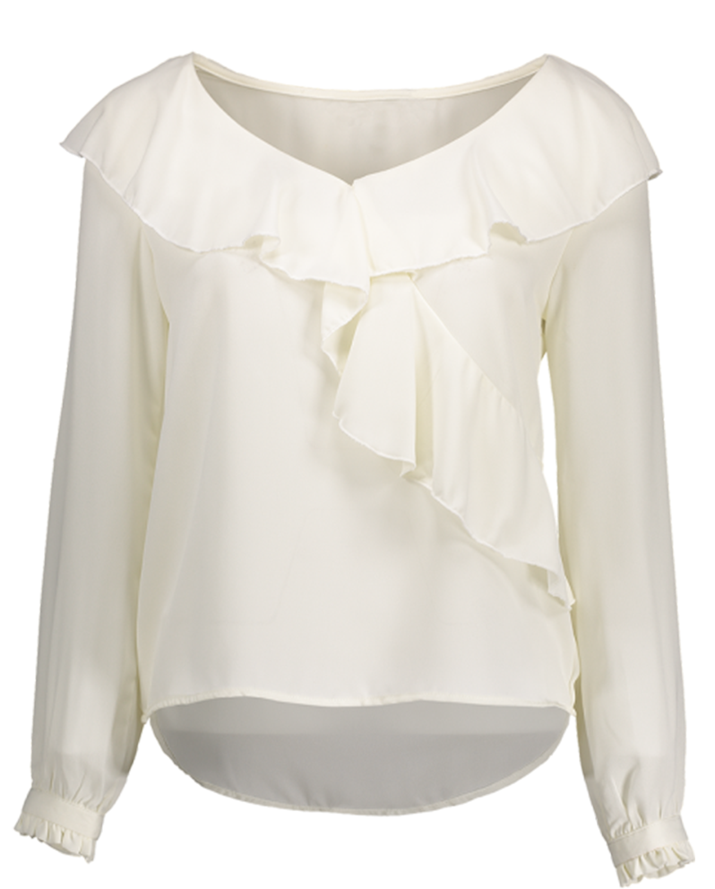
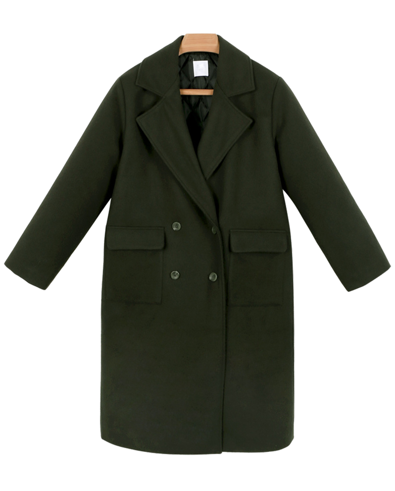
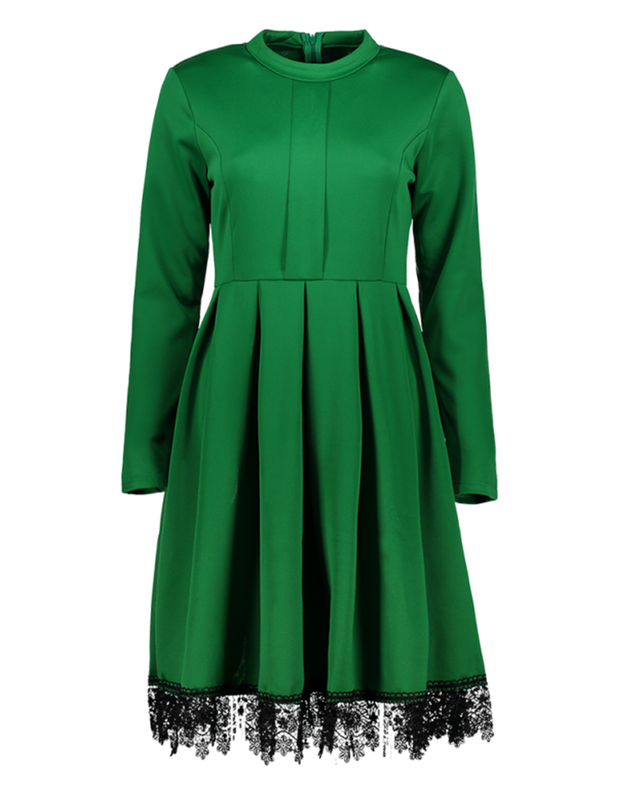

Nuestros Servicios
Sobre Chisgas
En el corazón del Barrio Restrepo en Bogotá, Chisgas ha tejido su historia con dedicación y pasión a lo largo de más de una década. Fundada por la necesidad de ofrecer un servicio de ajuste y personalización de prendas que cumpliera con los más altos estándares, Chisgas ha construido una sólida reputación en la comunidad. A lo largo de estos años, hemos tenido el honor de atender y satisfacer a más de 200 clientes, quienes han confiado en nosotros para perfeccionar sus vestimentas con un toque único y personalizado. Nuestra trayectoria está marcada por el compromiso con la calidad y la afinidad manual que ponemos en cada prenda, reflejando nuestra verdadera pasión por el arte de la sastrería.
Algunas de nuestras manualidades
Información
Selecciona una prenda











| Descripción | Precio |
|---|---|
| Bota sencilla | $10,000 |
| Bota original | $12,000 |
| Bota a mano | $13,000 |
| Entubar | $15,000 |
| Entubar formal | $18,000 |
| Cintura pantalón formal | $20,000 |
| Subir mangas | $10,000 - $15,000 |
| Voltear cuello | $10,000 |
| Costados | $8,000 |
| Vuelo | $10,000 |
| Subir hombros | $12,000 |
| Voltear cuello | $10,000 |
| Costados | $8,000 |
| Vuelo | $10,000 |
| Subir hombros | $10,000 |
| Cintura | $15,000 |
| Ruedo | $10,000 |
| Entallar | $10,000 |
| Ajustar prenses | $0 |
| Subir/bajar mangas | $10,000 |
| Subir/bajar mangas con forro | $15,000 |
| Subir/bajar vuelo | $10,000 |
| Subir/bajar vuelo con forro | $15,000 |
| Entallar costados | $8,000 |
| Entallar Espalda | $8,000 |
| Botones | $0 |
| Ajustar hombros | $12,000 |
| Arreglar forro | $0 |
| Subir/bajar largo manga | $15,000 |
| Subir hombro | $15,000 |
| Largo Vuelo | $15,000 |
| Entalle, Costados y Espalda | $18,000 |
| Entalle manga | $12,000 |
| Largo Manga | $10,000 |
| Vuelo | $10,000 |
| Entalle, Costados | $8,000 |
| Subir Hombro | $12,000 |
| Cambio Cierre | $15,000 |
| Largo Manga | $10,000 |
| Vuelo | $10,000 |
| Entalle, Costados | $8,000 |
| Subir Hombro | $12,000 |
| Subir/bajar largo manga | $15,000 |
| Subir hombro | $15,000 |
| Largo Vuelo | $18,000 |
| Entalle, Costados y Espalda | $12,000 |
| Entalle manga | $15,000 |
| Costados | $10,000 |
| Largo Manga | $10,000 |
| Vuelo | $10,000 |
| Entalle, Costados | $8,000 |
| Subir Hombro | $10,000 |